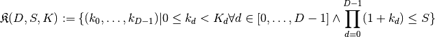

LimitedHyperbolicCutShape¶
About the LimitedHyperbolicCutShape class¶
The WaveBlocks Project
@author: R. Bourquin @copyright: Copyright (C) 2010, 2011, 2012, 2013, 2014, 2015, 2016 R. Bourquin @license: Modified BSD License
Inheritance diagram¶

Class documentation¶
-
class
WaveBlocksND.LimitedHyperbolicCutShape(D, K, limits)[source]¶ This class implements the hyperbolic cut basis shape which is a special type of sparse basis set. A basis shape is essentially all information and operations related to the set
 of multi-indices
of multi-indices  . The hyperbolic cut shape in
. The hyperbolic cut shape in  dimensions
with sparsity
dimensions
with sparsity  and limits
and limits  is defined as the set
is defined as the set
-
__init__(D, K, limits)[source]¶ Parameters: - D – The dimension
- K – The sparsity parameter
- limits – The list of all limits

- D – The dimension
-
__hash__()[source]¶ Compute a unique hash for the basis shape. In the case of hyperbolic cut basis shapes
the basis is fully specified by its
dimension and the sparsity parameter  .
.
-
__iter__()[source]¶ Implements iteration over the multi-indices
of the basis set .Note: The order of iteration is NOT fixed. If you need a special iteration scheme, use
get_node_iterator().
-
__contains__(k)[source]¶ Checks if a given multi-index
is part of the basis set .Parameters: k (tuple) – The multi-index we want to test.
-
contains(k)[source]¶ Checks if a given multi-index
is part of the basis set .Parameters: k (tuple) – The multi-index we want to test.
-
extend(tight=True)[source]¶ Extend the basis shape such that (at least) all neighbours of all boundary nodes are included in the extended basis shape.
Parameters: tight (Boolean, default is False) – Whether to cut off the long tails.
-
find_largest_index()¶ Find the index
 with maximal distance
with maximal distance
 from the zero index. In case of
multiple maxima the method returns the first one found.
from the zero index. In case of
multiple maxima the method returns the first one found.
-
get_basis_size(extended=False)¶ Returns the size
 of the basis. The size is the
number of distinct multi-indices that belong to the basis
.
of the basis. The size is the
number of distinct multi-indices that belong to the basis
.Raise: NotImplementedErrorAbstract interface.
-
get_description()[source]¶ Return a description of this basis shape object. A description is a
dictcontaining all key-value pairs necessary to reconstruct the current basis shape. A description never contains any data.
-
get_dimension()¶ Returns the dimension
of the basis shape .
This is defined as the number of components each multi-index
 has.
has.Raise: NotImplementedErrorAbstract interface.
-
get_limits()[source]¶ Returns the upper limit
 for all directions
for all directions  .
.Returns: A tuple of the maximum of the multi-index in each direction.
-
get_neighbours(k, selection=None, direction=None)[source]¶ Returns a list of all multi-indices that are neighbours of a given multi-index
. A direct neighbour is defined as
![(k_0, \ldots, k_d \pm 1, \ldots, k_{D-1}) \forall d \in [0 \ldots D-1]](../_images/math/16e636cfe8f9ae057568a0b8f026e4541ce77877.png) .
.Parameters: - k (tuple) – The multi-index of which we want to get the neighbours.
- selection (string with fixed values
forward,backwardorall. The valuesallis equivalent to the valueNone(default).) – - direction (int) – The direction
 in which we want to find
the neighbours
in which we want to find
the neighbours  .
.
Returns: A list containing the pairs
 .
.
-
get_node_iterator(mode='lex', direction=None)[source]¶ Returns an iterator to iterate over all basis elements
.Parameters: - mode (string) – The mode by which we iterate over the indices. Default is
lexfor lexicographical order. Supported is alsochain, for the chain-like mode, details see the manual. - direction (integer.) – If iterating in chainmode this specifies the direction the chains go.
- mode (string) – The mode by which we iterate over the indices. Default is
-